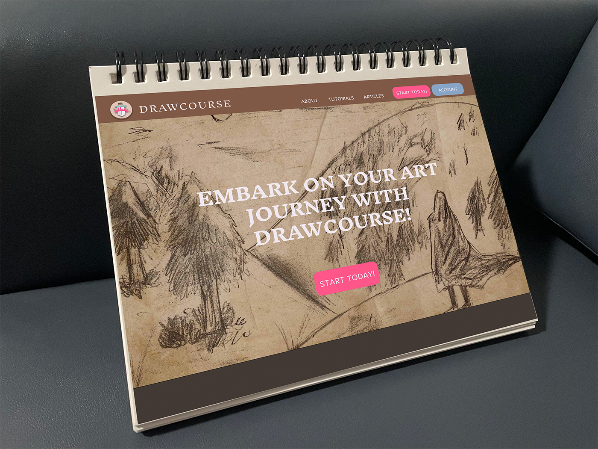
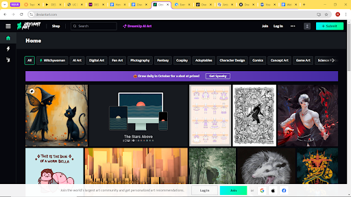
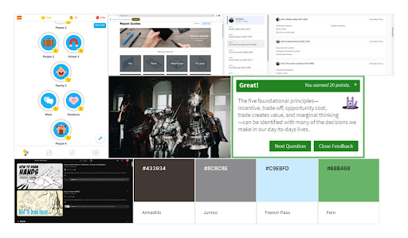
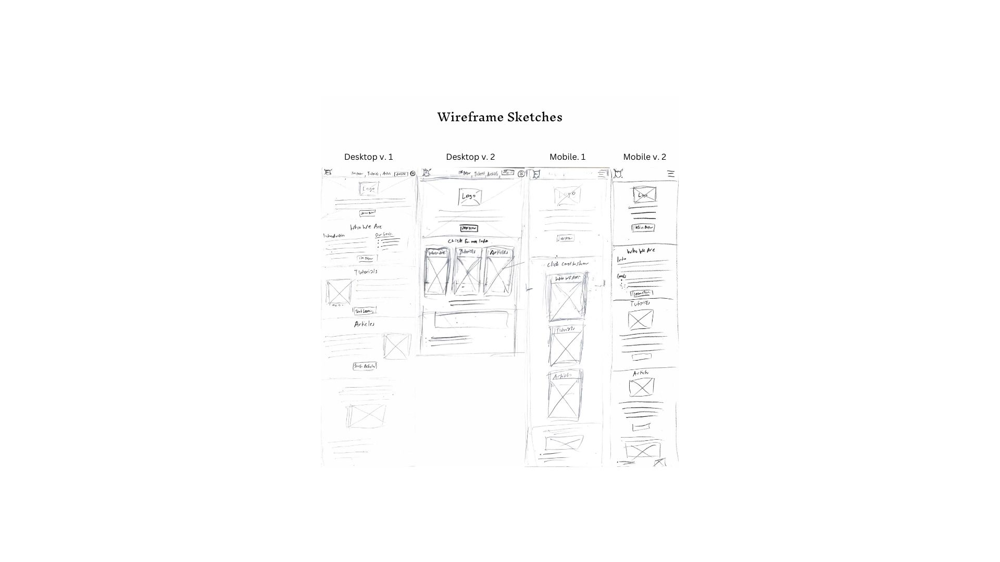
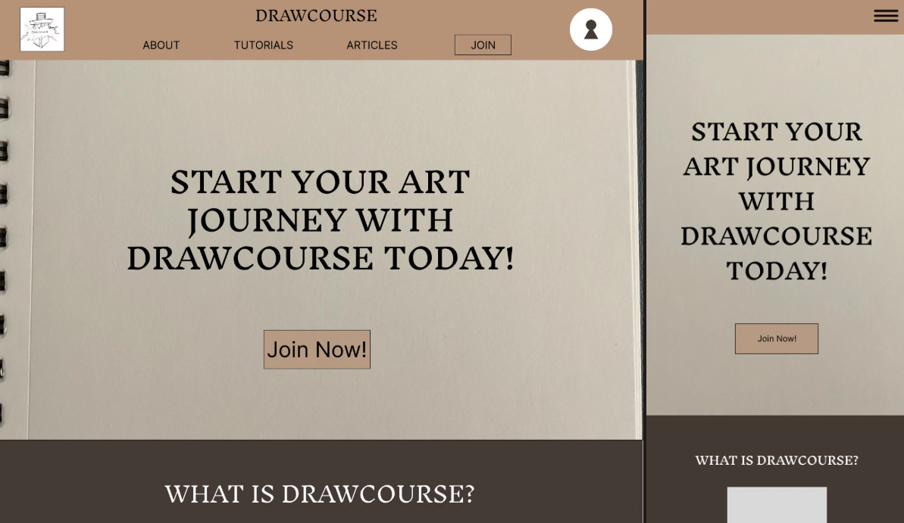
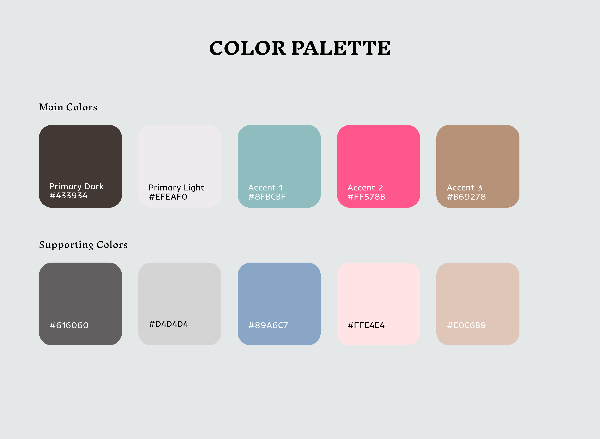
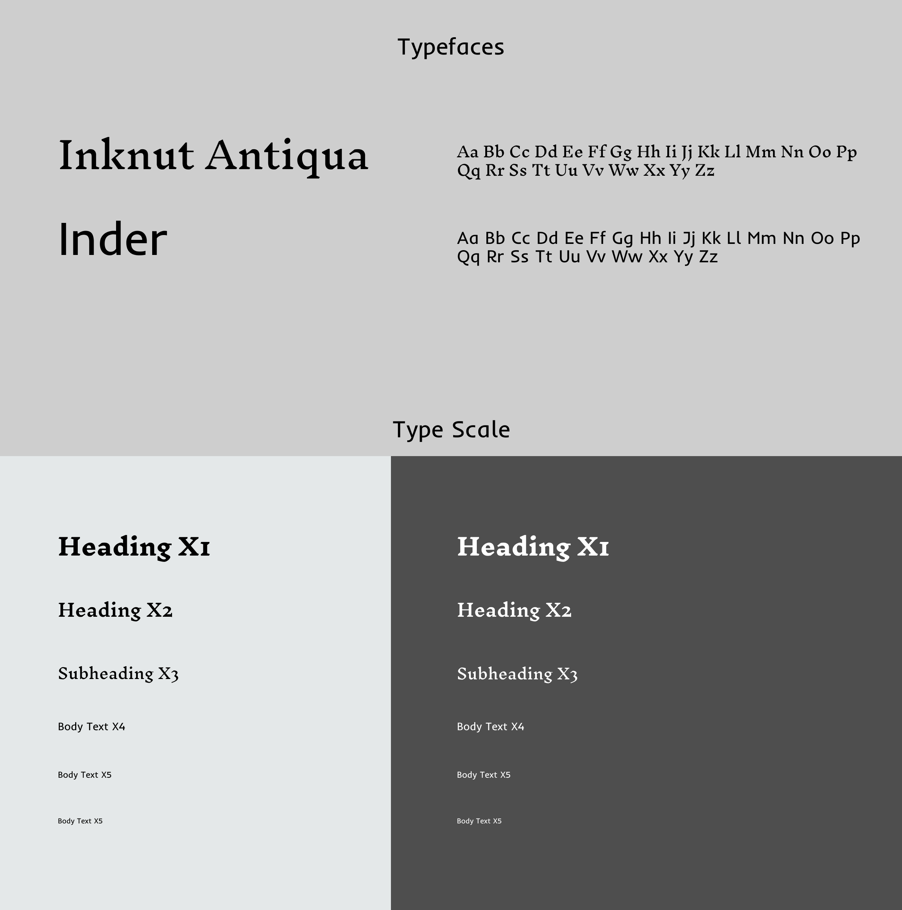

DRAWCOURSE
INTRODUCTION & PROBLEM IDENTIFICATION
This class project tasked us to create a home page for a socially impactful organization of some kind. This case study will go over the home page I designed for Drawcourse, an organization I created to help growing artists.
WHAT is Drawcourse?
"Drawing is Hard." This is a sentiment that is echoed among many people who are just starting out as artists, or even those who have been drawing for several years. Drawing requires understanding many difficult concepts such as perspective and proportion; even just learning how to use a pencil, pen, or paintbrush to make art for the first time is a struggle, with growth coming only with intentional practice. Even when an artist becomes experienced in their field, they may encounter unfamiliar challenges along the way. To help these artists along their journey, Drawcourse as a concept was created to help artists develop their skills and overcome their personal challenges.
WHY Drawcourse?
Drawcourse was born out of a desire to see the world flourish with more creativity and artistic passion, and a recognition of the reality that becoming an artist of any kind isn't an easy ideal. Many people are blessed with great art teachers and people who would avidly support their development, but many others have to find ways to teach themselves. In the midst of having to overcome many difficulties, it can be easy to lose the passion and the drive that started the journey in the first place, causing many people to quit or grow disillusioned with art. I want Drawcourse to be something that any artist could fall back on to encourage them and remind them of the great journey still ahead.
Competitive Analysis
To gain a better grasp on what sort of product that Drawcourse should be to best benefit the target audience, I did some research on a few different art websites.
DEVIANTART
Deviantart is a social networking site primarily made for artists, where users can submit their works ("Deviations") and can view other artists' works as well. Users can interact with other users, and can participate in Daily Challenges, implying an open and free artist community.
While looking at Deviantart and reflecting on my own experiences, I decided that Drawcourse would be different in a couple key ways. First, I wanted to more directly provide users with educational lessons and resources, instead of users having to search up tutorials from a broad spectrum of other artists. I also decided that at least on the website itself, users wouldn't be able to post their art or interact with other users freely, as I observed on Deviantart that the freedom users have on the site to post and interact with others could spread content that would be unhelpful or discouraging for beginning artists.
DRAWSPACE
Drawspace is an educational website focused on providing users with high-quality art lessons. Users can access an online set of ordered lessons in order to learn. There are also printable materials that educators can user to teach others in the classroom or some other learning environment.
Out of all the websites that I looked at for this analysis, Drawspace is probably the most similar in what I want to achieve in terms of features afforded to users, such as the ordered tutorials. I also ended up taking inspiration from their footer design for my own design. I chose not to incorporate the features relating to giving educators teaching materials, as for the website I preferred to see young artists spurring their own development. I also didn't want my general audience to feel like they were being transported into a classroom environment.
DRAWABOX
Drawabox is an educational site focused on providing drawing lessons to its users, similar to Drawspace. Unlike Drawspace, these lessons are free, though ads hug the sides of the web page to make up for that. Draw A Box features an ordered set of drawing lessons and also additional resources such as challenges and articles about working as an artist.
Draw A Box emphasizes how drawing is a skill to be trained with hard work, even calling some of its activities “drills”. While there may be some value to be found for more experienced artists, I don't think this sort of language and design would be suitable for beginning artists just finding their footing. As I already stated, I want artists to use Drawcourse to help bolster their passions, not to suck it dry. So I want to make my design simple and approachable for these sorts of users.
DESIGN PROCESS OVERVIEW
Moodboard
This moodboard served as a foundation for the conceptual ideas I had for Drawcourse. I drew inspiration from educational sites like Duolingo, iFixit, Youtube, and Inquizitive when thinking about what the site's content would be. I wanted to incorporate some medieval knight and fantasy elements to suit the theme of an "art journey," leading me to choose the dark brown "Armadillo" as the main color. I did end up using a similar blue, but I scrapped the green in favor of pink to be a better color for the paint elements to be.
Wireframe Sketches
These desktop and mobile wireframe sketches are split into two separate versions, one with a more traditional web design, and another that uses a card layout meant to help users navigate and process information about the website.

First Draft
This a portion of my first draft of the Drawcourse website, with the desktop and mobile views side by side. I decided at this stage to make the background a dark brown, with a lighter brown to color the top navigation bar. I also incorporated some important sections that appear throughout all my iterations. Around this time I also settled on a main color scheme and typography, as shown below:
 